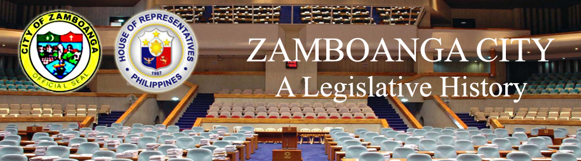

| History |
| Legislators |
| Laws |
| About |
 |
ZAMBOANGA CITY
The following text/information are lifted from the book of Lee W. Vance entitled Tracing your Philippine Ancestors which was published in Provo, Utah by Stevenson’s Genealogical Center in 1980 and Symbols of the State by the Department of Interior and Local Government of the Republic of the Philippines in 1998.
Zamboanga City is highly urbanized. It is at the southern tip of the Zamboanga Peninsula. It is also known as the “City of Flowers.” The city is located on the south westernmost tip of the Zamboanga Peninsula, on the island of Mindanao.
Zamboanga City was part of the representation of the Zamboanga Province from 1935 to 1953, of Zamboanga del Sur from 1953 to 1972 and of Region IX from 1978 to 1984. It was granted its own representation in 1984 by the Batasang Pambansa. It was divided into 2 districts by virtue of REPUBLIC ACT NO. 9269 on March 19, 2004. Veterans Avenue is the dividing line of the two districts.
Following is a time line 1,2,3,4,5 of events that led to the creation and development of Zamboanga City:
DATE |
EVENT |
|
Zamboanga City was the center of barter trading among the Chinese, Malays, and the area’s first settlers. It was the capital of Mindanao throughout the Spanish era, and during the American regime. |
|
Jambangan was established by the Subanons. |
|
Mohammedanism takes hold. |
|
The Spaniards arrive. |
|
The Zamboanga Peninsula was the scene of many conflicts between the Moros, Pagan Malay, Chinese, Siamese and sea pirates. |
|
Don Miguel Lopez de Legazpi visited what was known then as Sibugay, Sibuguey or Sibuguei. The Spaniards were well received, but later experienced considerable hostility when they tried to establish their sovereignty over the stubbornly independent people of Zamboanga. |
|
A formidable Fort, militant Catholicism, Zamboanga, and Chavacano arrives. |
|
The Spaniards sent expeditions against the Moros on the island of Basilan to the south, one of their most formidable strongholds in the region at that time. |
|
Spanish control was established when the Spanish fleet decisively defeated Tagal, the brother of the Sultan of Mindanao, off the coast of Punta de Flecha. |
|
Jesuit missionaries expanded their work from the northern part of the peninsula southward to Zamboanga but were forced to withdraw within two years, due to the natives’ violent opposition to the Christian faith. |
|
The Spanish government withdrew the entire garrison at Zamboanga and sent them to Luzon to help drive the Chinese forces away from that area when the powerful Chinese pirate Ko T’sen nearly succeeded in capturing the Spanish capital at Manila. |
|
Christian missionaries had established themselves fairly well at Dapitan and neighboring settlements. |
|
During Governor Bustamante’s term of office, the fort at Zamboanga was rebuilt, and efforts to reconstruct the area as a Spanish colony were again commenced. |
|
Filipino volunteers were armed, given military training, and placed under the command of Spanish officers. |
|
The corregimiento of Zamboanga was elevated to a politico-military province. |
|
Zamboanga was made one of the six districts of Mindanao and Sulu. |
|
For most of the Spanish period, Zamboanga town was the capital of the Spanish government in Mindanao. For the period 1872 to 1875, however, Cotabato town was made the capital. |
|
Dr. Jose Rizal lived in exile in Dapitan. |
|
Isidoro Medel and Melanio Ramos succeeded in recruiting a considerable force of natives to join the rebellion. The uprising they instigated was unsuccessful at first, but eventually, the Revolutionary forces attacked the Spanish forces that took possession of the province, and the Spaniards evacuated. |
|
The Americans assumed control, establishing civil government in the province. Philippine Commission Act 787, dated June 1, 1903 created the Moro Province with five component districts. Zamboanga was one of the districts. |
|
Philippine Commission Act 1283, enacted Jan 13, 1905, abolished the sub-district of Dapitan and annexed it to Zamboanga District as one of its integral parts. |
|
The Municipality of Zamboanga was converted into a city by virtue of ACT NO. 272. |
|
The Department of Mindanao and Sulu, assumed the functions of the dissolved Moro Province pursuant to Philippine Commission Act 2309, enacted Dec 20, 1913, as implemented by Phil Commission Act 2408, enacted July 23, 1914, and effective Sept. 1, 1914. |
|
Zamboanga became a province under the Department of Mindanao and Sulu, which assumed the functions of the dissolved Moro Province. |
|
The Department of Mindanao and Sulu was dissolved, and its functions were taken over by the Bureau of Non-Christian Tribes of the Department of the Interior of the national government. |
|
Zamboanga became a city under the COMMONWEALTH ACT NO. 39, and was inaugurated as such on February 26, 1937. |
|
The National Assembly of the Commonwealth of the Philippines passed a bill sponsored by Assemblyman Juan S. Alano seeking the conversion of the Municipality of Zamboanga into a chartered city. Commonwealth Act No. 39, also known as “The Charer Act of 1936”, was approved by President Manuel L. Quezon. |
|
The capital of Zamboanga Province was transferred from Zamboanga to Dipolog. |
|
The capital of Zamboanga was transferred to the newly created town of Molave under REPUBLIC ACT 286. |
|
The ancient province of Zamboanga was divided into Zamboanga del Norte and Zamboanga del Sur. The province of Zamboanga del Sur consisted of the municipalities of Pagadian (the capital), Aurora, Molave, Labangan, Dimantaling, Margosatubig, Ipil, Kabasalan, Dinas, Malangas and Alicia. |
|
Zamboanga del Sur became a separate province under R.A. NO. 711 which divided Zamboanga in two. |
|
By virtue of R.A. 2512, the seat of government of Taluksangay district, City of Zamboanga, was transferred to Pasilmanta, Sakol Island. |
|
By virtue of BATAS PAMBANSA BILANG. 680, the name of Barangay Rio Hondo in Zamboanga City was changed to Kauman Muslimin. |
|
By virtue of R.A. 7350, October 12 of every year was declared as a special non-working holiday in the city of Zamboanga. |
|
By virtue of R.A. 9269, the 2nd legislative district of the City of Zamboanga was created. |
|
Zamboanga City is composed of 2 districts. The following is a list of barangays per district. 1st District: 2nd District: |
Sources:
1Vance, L. W. (1980). Tracing your Philippine ancestors. Provo, Utah: Stevenson's Genealogical Center.
2Velasco, C. R. and Untivero, R. G. (1998). Symbols of the State. Manila: National Media Production Center.
3History of Zamboanga. Retrieved May 18, 2010 from the Zamboanga website: http://www.zamboanga.com/history/history_of_zamboanga_circa_1600s.html
4Zamboanga City. Retrieved May 18, 2010 from the Wikipedia website: http://en.wikipedia.org/wiki/Zamboanga_City
5Legislative districts of Zamboanga City. Retrieved May 18, 2010 from the Wikipedia website: http://en.wikipedia.org/wiki/Legislative_districts_of_Zamboanga_City

Congressional Library Bureau
Legislative Library Service